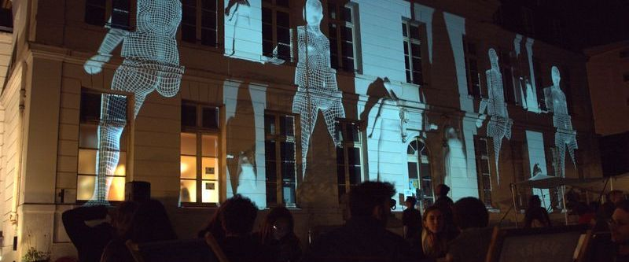
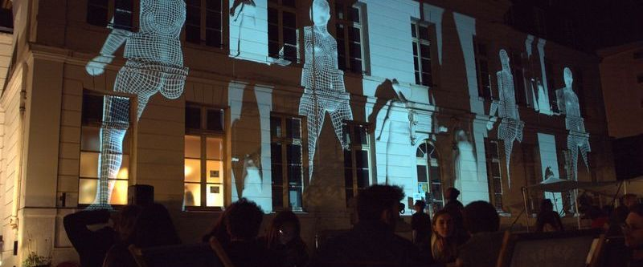

Polarizon
Mapping, Laser, Live Coding
Trois jours dédiés aux arts du pixel avec pour terrain de jeu la façade du château de L'amiral à Sceaux, Ile-De-France, France. POLARIZON #01 propose de faire rencontrer au public des artistes performant dans le domaine numérique pour assister à des performances live de mapping (projection de visuel sur façade) ainsi que des ateliers montrant l'envers du décors, les processus de conception et réalisation de cet art.
Event
2018 _ Château de l’amiral, Sceaux


 
